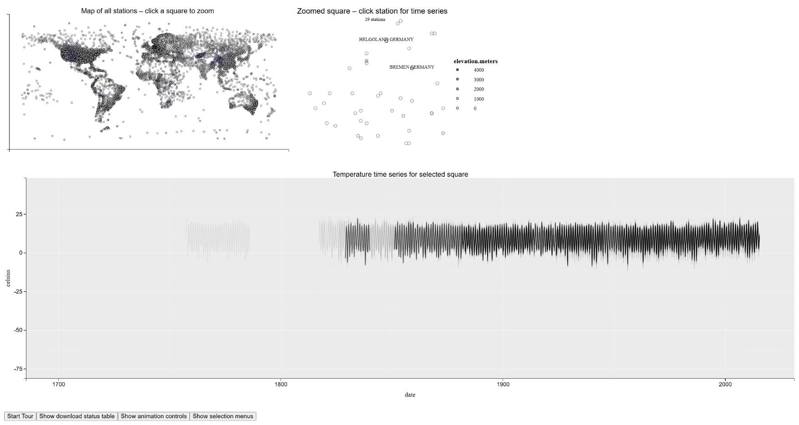
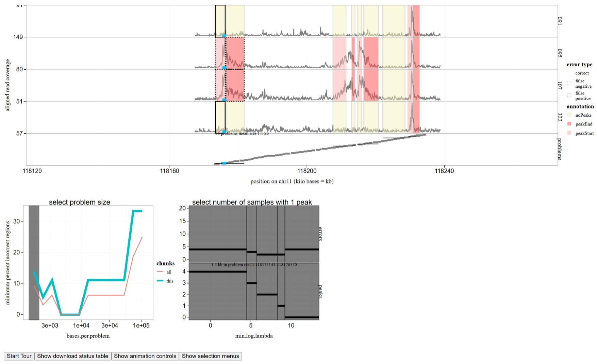
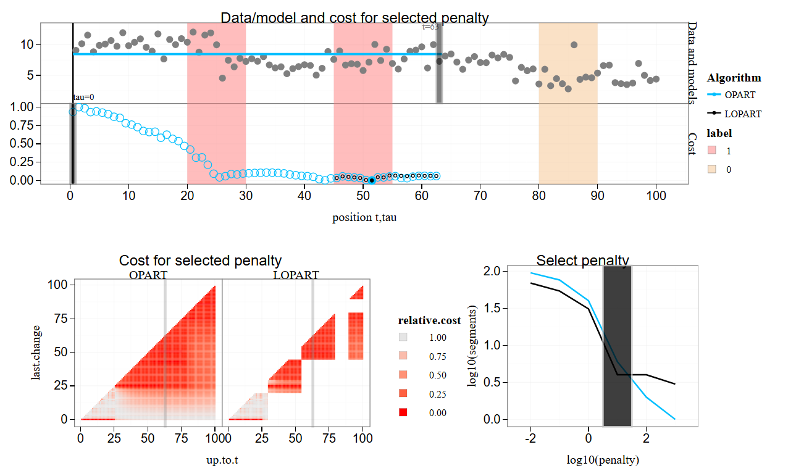
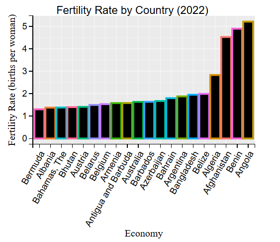
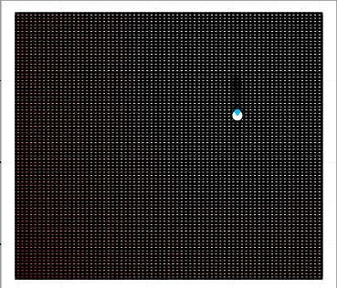
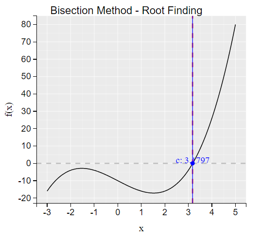

animint2 gallery
This is a gallery of data visualizations which have been creating using the R package animint2.
| viz.link | title | links |
|---|---|---|
 |
Climate change sensor stations | repo source |
 |
Data viz with 206 selectors | repo source |
 |
Interactive visualization of candidate selection | repo source |
 |
repo source video | |
 |
repo source video | |
 |
repo source video | |
 |
repo source video |
Visualizations with missing meta-data
| viz.link | repo.link | error |
|---|---|---|
| tdhock/tdhock-figure-nnet-regression-degrees | repo | gh-pages branch of tdhock/tdhock-figure-nnet-regression-degrees should contain file named Capture.PNG (screenshot of data viz) |
| tdhock/animint-figure-nnet-regression-degrees | repo | plot.json file in gh-pages branch of tdhock/animint-figure-nnet-regression-degrees should have element named title which should be string describing the data viz |